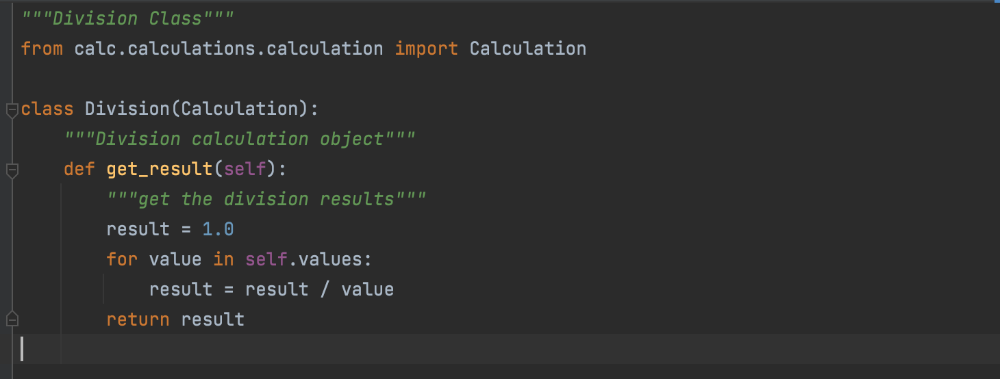
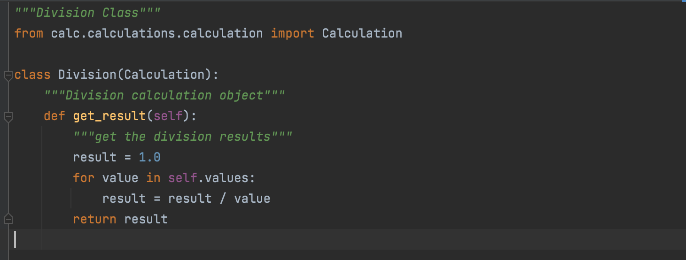

Basic Concepts of Object-Oriented Programming
Introduction
The term “Object-Oriented Programming” (OOP) was coined by Alan Kay around 1966 while he was at grad school. The language called Simula was the first programming language with the features of Object-oriented programming. It was developed in 1967 for making simulation programs, in which the most important information was called objects.
Though OOPs were in the market since the early 1960s it was in the 1990s that OOPs began to grow because of C++. Afe ter that, this technique of programming has been adapted by various programming languages including Python Today its application is in almost every field such as Real-time systems, Artificial intelligence, and expert systems, Client-server systems, Object-oriented databases, and many more.
What is Object-Oriented Programing?
Object-Oriented Programming(OOP), is all about creating “objects”. An object is a group of interrelated variables and functions. These variables are often referred to as properties of the object and functions are referred to as the behavior of the objects. These objects provide a better and clear structure for the program.
For example, a car can be an object. If we consider the car as an object then its properties would be – its color, its model, its price, its brand, etc. And its behavior/function would be acceleration, slowing down, gear change.
Object-Oriented programming is famous because it implements the real-world entities like objects, hiding, inheritance, etc in programming. It makes visualization easier because it is close to real-world scenarios.
Major OOP Concepts
Major OOP (object-oriented programming) concepts in Python include :
- Inheritance
- Polymorphism
- Data Abstraction
- Encapsulation
Lets take a look at each concept with example.
1. Inheritance
Inheritance is the procedure in which one class inherits the attributes and methods of another class. The class whose properties and methods are inherited is known as Parent class. And the class that inherits the properties from the parent class is the Child class.
The interesting thing is, along with the inherited properties and methods, a child class can have its own properties and methods.
Let’s say you have a base class Calculation and you derive from it to create a Division class. The inheritance relationship states that a Division is a Calculation. This means that Division inherits the interface and implementation of Calculation, and Division objects can be used to replace Calculation objects in the application.
This is an example of single inheritance. The parent class is ‘Calculation’ class which consists of four methods each focusing on one responsibility. The child classes (‘Addition’, ‘Subtraction’, ‘Multiplication’ and ‘Division’ classes) inherit all these attributes and the attributes’ behavior along with their own attribute and behavior, the get_result() method.
The "import" statement written in the Division class is used for Inheritance.
 

2. Polymorphism
This is a Greek word. If we break the term Polymorphism, we get “poly”-many and “morph”-forms. So Polymorphism means having many forms. In OOP it refers to the functions having the same names but carrying different functionalities.
The literal meaning of polymorphism is the condition of occurrence in different forms. Polymorphism is a very important concept in programming. It refers to the use of a single type entity (method, operator or object) to represent different types in different scenarios.
In our Calculator program, the get_result() method is the best example of Polymorphism with Inheritance. In calculator program, get_result() is an abstract method which do not return anything in the file calculation.py. But in addition.py it returns the addition of numbers. In subtraction.py it returns the subtraction of numbers. In multiplication.py it returns the multiplication of numbers. In division.py it returns the division of numbers.
3. Data Abstraction
We use Abstraction for hiding the internal details or implementations of a function and showing its functionalities only. This is similar to the way you know how to drive a car without knowing the background mechanism. Or you know how to turn on or off a light using a switch, but you don’t know what is happening behind the socket.
Any class with at least one abstract function is an abstract class. In order to create an abstraction class first, you need to import ABC class from abc module. This lets you create abstract methods inside it. ABC stands for Abstract Base Class.
In our Calculator program, calculation.py file is using an abstract method. We have imported the Abstract Method using "import" statement, and then we have declared it on the method which we have to make abstract. The identifier "@abstractmethod" is used to declare a method as abstract. In our code get_result() is an abstract method. In the main method it is just returning True value. But other files have called that methods to give it its functionality. For Example: in division.py get_result() method is returning division of the numbers.
4. Encapsulation
When working with classes and dealing with sensitive data, providing global access to all the variables used within the program is not a good choice. Encapsulation offers a way for us to access the required variables without providing the program full-fledged access to any of those variables.
Updating, modifying, or deleting data from variables can be done through the use of methods that are defined specifically for the purpose. The benefit of using this approach to programming is improved control over the input data and better security.
The concept of encapsulation is the same in all object-oriented programming languages. The difference is seen when the concepts are applied to particular languages. Compared to languages like Java that offer access modifiers (public or private) for variables and methods, Python provides access to all the variables and methods globally.
In our Calculator program, in all the Python files the methods are Encapsulated under the class.
For example:- In calculation.py, class Calculation encapsulates __init__(),
convert_args_to_list_float(), create(), get_result() methods.
In addition.py, class addition encapsulates get_result() method
To access any of these methods we will have to call class Calculation and then can access
the method.